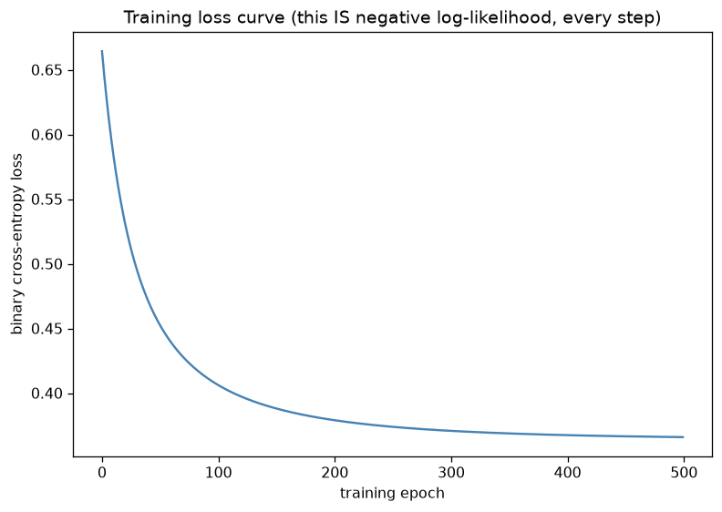
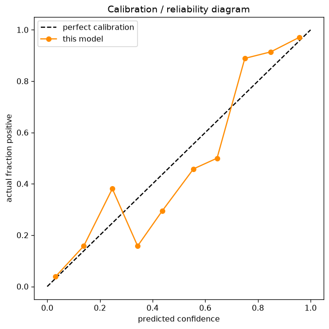
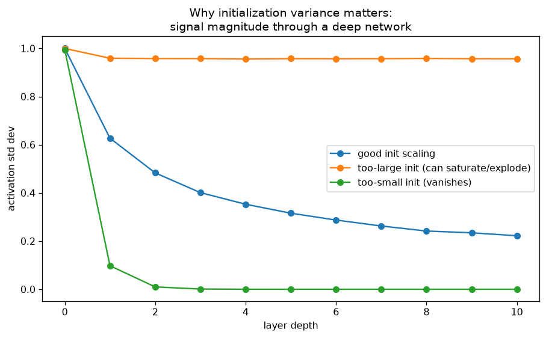

Chapter 25: The Statistics Hiding Inside Neural Networks
The idea this chapter builds toward
This is the synthesis chapter - no fundamentally new statistical machinery, but a deliberate, explicit walk through exactly where every major idea from this entire book shows up, by name and by mechanism, inside the design and training of neural networks. If you've followed the book this far, almost nothing in this chapter will feel genuinely new; the goal is for the "aha, deep learning is just statistics wearing a different vocabulary" feeling to become fully concrete and permanent.
Intuition, in one breath: A neural network is not a new kind of object that makes statistics obsolete - it is a very large, very flexible statistical model, and every familiar tool (likelihood, priors, regularization, calibration) is still doing exactly the job it did in the earlier chapters, just with more parameters.
Loss functions are negative log-likelihoods (Chapter 10, Chapter 21)
Every standard neural network loss function is a direct instance of Chapter 10's MLE recipe, just with the model's parameters being millions of network weights instead of a handful of regression coefficients:
- Mean squared error (regression networks) = negative log-likelihood under an assumed Gaussian error distribution (derived explicitly in Chapter 10).
- Binary cross-entropy (binary classifiers) = negative log-likelihood under a Bernoulli label distribution (derived explicitly in Chapter 10, reframed via entropy in Chapter 21).
- Categorical cross-entropy (multi-class classifiers, including every token-prediction step in a language model) = the direct multi-outcome generalization of the same Bernoulli argument, using a Categorical distribution (the multi-outcome generalization of Bernoulli from Chapter 5) instead of a two-outcome one.
A genuinely useful habit once you know this: whenever you see a new, unfamiliar loss function in a paper, ask "what probability distribution over the data is this the negative log-likelihood of?" - the answer almost always exists and almost always clarifies why that specific loss was chosen over alternatives, rather than leaving it as an arbitrary-feeling formula.
Softmax is just the Categorical distribution's parameterization, made differentiable
A multi-class classifier's final layer typically outputs raw scores ("logits") that get passed through softmax: $\hat p_k = \frac{e^{z_k}}{\sum_j e^{z_j}}$, turning arbitrary real numbers into a valid probability distribution (non-negative, summing to 1 - exactly the requirements a PMF must satisfy, from Chapter 5). The $e^{(\cdot)}$ exponential ensures positivity (echoing exactly the same exponential-of-a-quantity trick used to build the Normal density in Chapter 6 and the Poisson/exponential family more broadly), and dividing by the sum of all exponentials is precisely the normalizing-constant idea you've now seen repeatedly (Chapter 4's Bayes evidence term, Chapter 6's Normal density's $\frac{1}{\sigma\sqrt{2\pi}}$, Chapter 17's Bayesian posterior denominator) - softmax is nothing more than "take arbitrary scores, exponentiate them to force positivity, then normalize so they sum to 1," the same universal recipe for turning anything into a valid probability distribution.
Weight initialization is literally choosing a prior (Chapter 4, Chapter 6, Chapter 17)
Before training starts, a neural network's weights must be set to some initial values, and the standard practice is drawing them randomly from a Normal (or closely related) distribution with a carefully chosen variance (e.g., "Xavier/Glorot initialization" and "He initialization" are specific variance formulas, chosen based on the number of inputs/outputs of each layer, designed so signal magnitude neither explodes nor vanishes as it passes through many layers - a direct, practical echo of the variance-scaling rule $\text{Var}(aX)=a^2\text{Var}(X)$ from Chapter 7). This is, structurally, exactly a Bayesian prior (Chapter 17): before any data is seen, you're expressing a belief distribution over plausible initial weight values, chosen specifically to keep early training numerically well-behaved. Unlike Chapter 17's explicit Bayesian MAP estimation (where the prior stays mathematically present throughout fitting), this initial "prior" mostly just sets the starting point for an otherwise non-Bayesian (plain MLE-via-gradient-descent) optimization - but the conceptual lineage is unmistakable, and some genuinely Bayesian deep learning methods keep a prior's influence active throughout training in a more literal, Chapter-17-style way.
Regularization in deep learning is still Chapter 16/17's same idea
Weight decay (an L2 penalty added directly to a neural network's loss, exactly Chapter 16's Ridge penalty) and Dropout (randomly "turning off" a fraction of neurons during each training step) both serve the same bias-variance-tradeoff purpose as Chapter 16's regularization: preventing the enormous flexibility of a many-millions-of-parameters model from simply memorizing training-set noise (exactly the overfitting mechanism demonstrated concretely in Chapters 15 and 22). Dropout has a neat probabilistic interpretation worth knowing: it can be shown to approximate training an enormous ensemble of many smaller sub-networks simultaneously and averaging their predictions - directly invoking the CLT-style variance-reduction-through-averaging logic from Chapter 8's ensembling preview.
Batch normalization is literally Chapter 6's z-score standardization, applied mid-network
Batch normalization takes the activations flowing through an intermediate layer and standardizes them - subtracting the batch's mean, dividing by the batch's standard deviation - exactly reproducing Chapter 6's z-score formula, $z=\frac{x-\mu}{\sigma}$, except computed using a mini-batch of training examples' statistics rather than a known population $\mu,\sigma$ (making it, in effect, an online, repeatedly-re-estimated application of Chapter 9's estimator machinery, recomputed fresh at every training step). The motivation is precisely the same as standardizing input features before training a classical regression model (mentioned back in Chapter 6): keeping values on a consistent, well-behaved scale makes optimization dramatically easier and more stable, now applied not just to the raw input data but to every intermediate layer's outputs throughout a deep network.
Training itself is MLE via an iterative optimization procedure
Chapter 10 derived the Normal-distribution MLE by setting a derivative to exactly zero and solving algebraically - a closed-form shortcut only possible because that specific problem (one parameter, one simple distribution) was mathematically tractable by hand. A neural network's loss landscape, with millions of interacting parameters, has no such closed-form solution - so instead of solving for the zero-derivative point directly, gradient descent repeatedly nudges every parameter a small step in the direction that locally decreases the loss (echoing Chapter 0's derivative-as-slope intuition), iterating until it settles near a (typically local, not provably global, as flagged in Chapter 23's EM discussion) minimum. The target being minimized is still exactly the same negative log-likelihood object from Chapter 10 - only the method of finding the minimum has changed, from algebra to iterative numerical search, out of sheer necessity given the problem's scale.
Why a classifier's softmax output can be interpreted as a confidence - and why that confidence can be miscalibrated
Because softmax outputs are trained (via cross-entropy loss, Chapter 21) to approximate the true conditional probability $P(\text{class}\mid\text{input})$, it's tempting to read a network's output of "0.93 for cat" as a literal, trustworthy probability - but this interpretation can be badly wrong in practice, a phenomenon called miscalibration. A perfectly calibrated classifier should be correct roughly 93% of the time whenever it outputs 0.93 confidence - modern, very large/flexible networks are empirically known to often be systematically overconfident relative to this ideal, a direct, measurable consequence of the same model-capacity-versus-generalization tension formalized in Chapter 22's statistical learning theory, and a very active area of applied ML research (calibration techniques like "temperature scaling" exist specifically to correct this gap after training, by rescaling the softmax logits to better match Chapter 12's and Chapter 17's notions of what a trustworthy probability statement ought to mean).
Figures

The training loss curve of a tiny network -- this curve IS the negative log-likelihood, decreasing every epoch.

A calibration / reliability diagram: predicted confidence vs actual accuracy. Points on the diagonal are perfectly calibrated.

Activation magnitude through 10 layers under good, too-large, and too-small weight initialization -- showing exactly how poor scaling causes signal to explode or vanish with depth.
Run it yourself
book/code/ch25_statistics_in_neural_networks.py trains a tiny neural network (built with plain numpy, no deep learning framework, so every piece is visible) on a toy binary classification problem, printing and confirming that its training loss at each step is numerically identical to the negative log-likelihood formula from Chapter 10/21, directly visualizes its softmax output probabilities against a reliability/calibration diagram to show over/under-confidence directly, and separately demonstrates weight-initialization variance scaling by comparing activation magnitudes through several layers under good vs. poorly-chosen initialization variances.
python book/code/ch25_statistics_in_neural_networks.py
Why This Matters - In AI and In Everyday Life
In AI / machine learning:
- This entire chapter IS the AI application: softmax, weight initialization, batch normalization, weight decay, dropout, and training itself are all direct, named instances of the statistics covered across this whole book.
- Model calibration in high-stakes deployments: ensuring a medical-diagnosis or self-driving-car model's stated confidence actually matches its real accuracy (this chapter's reliability diagram) is a genuine, actively-managed real-world safety concern.
- Dropout and weight decay in transformer training: the L2 regularization and stochastic dropout this chapter describes are standard ingredients in every frontier LLM training run, directly instantiating Chapter 16's bias-variance penalty at billions-of-parameters scale.
- Jensen-Shannon/temperature tricks in RLHF and distillation: the KL-style penalties that keep a fine-tuned model from drifting away from its reference policy are the probabilistic-distribution view of this chapter's softmax and cross-entropy machinery, applied to align generative models without destroying their calibrated behavior.
In everyday, non-AI life:
- A student learning from a teacher's corrections: a loss function is mathematically a teacher's "how wrong was that, and in which direction" signal, and gradient descent is the student nudging their understanding step by step -- a real pedagogical analogy, not just a cute one.
- Trusting an AI's stated confidence: when a medical-imaging AI says "85% confident this is malignant," whether that 85% is actually trustworthy (calibration) has direct, real consequences for patient care decisions made by real doctors.
Worked example - by hand, larger
Let's push one training step through a single-logit binary classifier entirely by hand, checking that the loss really is the Chapter 10 negative log-likelihood and watching the gradient signal. Suppose the network outputs a logit (pre-sigmoid activation) $z = 0.5$ for one training example whose true label is $y=1$ (the positive class).
Recover the probability. The sigmoid gives $p = \sigma(z) = \frac{1}{1+e^{-z}} = \frac{1}{1+e^{-0.5}}$. Now $e^{-0.5} = 0.6065$, so $p = 1/(1+0.6065) = 1/1.6065 = 0.6225$. The model currently says "62.25% positive."
Compute the loss (binary cross-entropy = negative log-likelihood). With $y=1$ the BCE is $L = -\ln p = -\ln 0.6225 = 0.4741$ nats. As a sanity check on the MLE framing: under a Bernoulli($p$) model, the likelihood of the observed label $y=1$ is $p=0.6225$, and $-\ln$ of that is exactly the loss - this is Chapter 10's Bernoulli MLE negative log-likelihood, one data point at a time.
Compute the gradient w.r.t. the logit. For binary cross-entropy plus sigmoid, the derivative collapses beautifully to $\frac{\partial L}{\partial z} = p - y = 0.6225 - 1 = -0.3775$. The negative sign means: to reduce loss, increase $z$ (and hence $p$). Gradient descent with learning rate $\eta = 0.1$ updates $z \leftarrow z - \eta(p-y) = 0.5 - 0.1\times(-0.3775) = 0.5 + 0.03775 = 0.53775$.
Check the loss fell. New probability: $\sigma(0.53775) = 1/(1+e^{-0.53775}) = 1/(1+0.5840) = 0.6313$. New loss: $-\ln 0.6313 = 0.4600$ nats, down from $0.4741$. One small step reduced the surprise, exactly as advertised.
The takeaway: the "magic" backward pass is just this one-liner gradient $p-y$ (the difference between predicted probability and true label), and that clean form is not a coincidence - it falls directly out of the fact that the loss is the negative log-likelihood of a Bernoulli distribution, the same MLE object from Chapter 10.
Check your understanding
- Pick any loss function you've heard of elsewhere (e.g. hinge loss, Huber loss, focal loss) and try to guess what probability-distribution assumption it might correspond to, using this chapter's "what distribution is this the negative log-likelihood of" question as a guide.
- Why is weight initialization a kind of prior, in the Chapter 17 sense, even though training doesn't keep referring back to it the way Bayesian MAP estimation does?
- Why would an overconfident (miscalibrated) classifier be especially dangerous in a high-stakes application (e.g. medical diagnosis), connecting back to Chapter 4's medical-test base-rate discussion?
Exercises
Exercise 1 - MSE as a Gaussian log-likelihood
A regression network predicts $\hat y = 3.0$ for a target $y = 4.0$. Assume Gaussian errors with $\sigma = 1$. Compute the negative log-likelihood (up to constants), then repeat for $\hat y = 3.5$ and confirm the loss got smaller.
Show solution
Gaussian negative log-likelihood (dropping the $\log(\sigma\sqrt{2\pi})$ constant, which doesn't depend on $\hat y$): $L = \frac{(y-\hat y)^2}{2\sigma^2}$. For $\hat y = 3.0$: $L = \frac{(4.0-3.0)^2}{2\times1^2} = \frac{1}{2} = 0.5$. For $\hat y = 3.5$: $L = \frac{(4.0-3.5)^2}{2} = \frac{0.25}{2} = 0.125$. The loss fell from 0.5 to 0.125 - a factor of 4, matching the squared error ratio $(1.0/0.5)^2 = 4$. This is why minimizing mean squared error and maximizing Gaussian likelihood are the *same* optimization, and why MSE is scale-sensitive to $\sigma$: a network trained under $\sigma=1$ implicitly assumes errors of that size.Exercise 2 - Temperature scaling, by hand
A classifier outputs logits $z = (2.0,\,1.0,\,0.0)$ for a 3-class problem. Compute the softmax probabilities at temperature $T=1$ and then at $T=2$. Which is more confident, and why does this matter for calibration?
Show solution
Softmax is $\hat p_k = e^{z_k/T}/\sum_j e^{z_j/T}$. At $T=1$: exponentials $e^{2}=7.389$, $e^{1}=2.718$, $e^{0}=1$. Sum $=11.107$. Probabilities: $0.665,\,0.245,\,0.090$. At $T=2$: divide logits by 2 → $1.0,\,0.5,\,0.0$. Exponentials $2.718,\,1.649,\,1$. Sum $=5.367$. Probabilities: $0.507,\,0.307,\,0.186$. The $T=2$ distribution is *flatter* - less confident. Since large networks are typically overconfident, increasing $T$ on a held-out set to minimize validation NLL ("temperature scaling") is the standard post-hoc calibration fix. It never changes which class wins (the argmax is preserved), only how much the model overstates its confidence - exactly the miscalibration problem this chapter warns about.Exercise 3 - Why initialization scaling matters
Xavier initialization sets weight variance $\text{Var}(w) = 1/n_{\text{in}}$ for a layer with $n_{\text{in}}$ inputs. If activations have variance 1 and there are $n_{\text{in}}$ independent weighted inputs, compute the output variance. What happens if the variance is instead set to $2/n_{\text{in}}$, and why does that cause exploding activations with depth?
Show solution
Output $= \sum_{i=1}^{n_{\text{in}}} w_i x_i$. With independent zero-mean $w_i$, $x_i$: $\text{Var}(\text{output}) = \sum_i \text{Var}(w_i)\text{Var}(x_i) = n_{\text{in}}\times\frac{1}{n_{\text{in}}}\times1 = 1$. Signal variance is preserved layer to layer - activations neither explode nor vanish. If instead $\text{Var}(w) = 2/n_{\text{in}}$, then each layer multiplies the variance by $n_{\text{in}}\times\frac{2}{n_{\text{in}}} = 2$. After $L$ layers the variance is $2^L$ - after 10 layers, $2^{10}=1024$x, after 20 layers about a million-fold. Activations explode, saturating nonlinearities and destabilizing training. This is the direct, practical consequence of Chapter 7's variance-scaling rule $\text{Var}(aX)=a^2\text{Var}(X)$, and it is exactly why initialization variance is chosen as an explicit function of layer width.What's next
Chapter 26, the final chapter, is a short map of where to go next - causal inference, time series analysis, experimental design/A-B testing at scale, and pointers for deepening any single thread of this book further - now that you have the full statistical vocabulary to understand what each of those next steps is actually for.